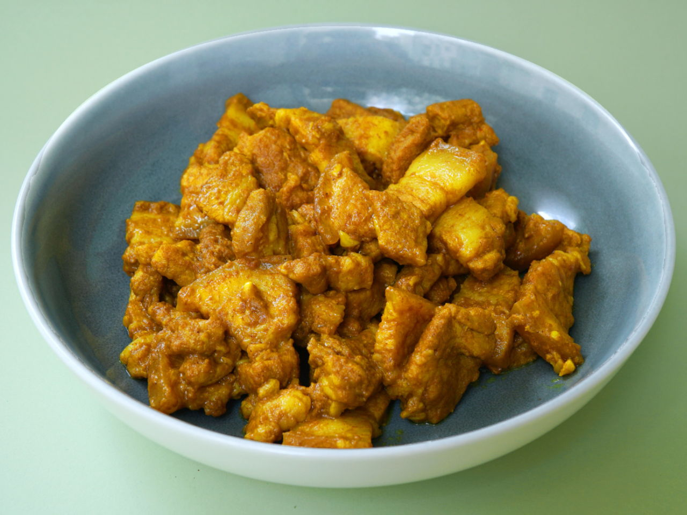

How to Prepare Pork Stir Fry in Turmeric

Pork Stir Fry in Turmeric
Pork Stir-Fry in Turmeric is an easy dish to prepare. With the turmeric spice rub, soy sauce, sesame oil and some wine, the taste is extremely addictive and flavourful. The perfect amount of turmeric in the recipe prevents the metallic aftertaste too.
Ingredients
- 250g pork belly
- 0.5 tbsp corn starch
- 0.06 tsp white pepper
- 0.25 tsp onion powder
- 0.06 tsp garlic powder
- 0.25 tsp salt
- 0.56 tsp turmeric powder
- 2 tsp light soy sauce
- 0.25 tbsp shaoxing wine
- 0.5 tsp seasame oil
- 0.5 tbsp water
- 2 garlic clove(s)
- 0.5tbsp oil
- Chop pork belly into bite sized pieces. Set aside in a large mixing bowl.
- In a separate bowl, mix all the ingredients below until combined. Make sure the mixture is not lumpy. Add the mixture and minced garlic to the chopped pork belly.
- In a pan, heat oil over medium heat. Mince garlic cloves and sauté them in the pan until golden brown. Then, add the pork belly and continue to sauté until cooked. If the dish is too dry, gradually add 1 tablespoons of water at a time. Serve immediately.